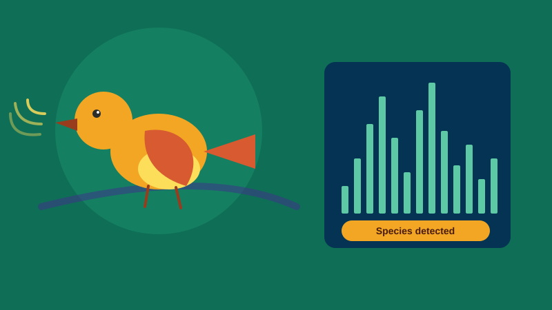

Replace this line with one sentence saying what your project does.
See the demo
Voice of Animal takes an audio clip of a bird sound and tells you which bird species it is. You just upload or record the sound, and the model listens to it and predicts the bird. Think of it like Shazam but for bird calls instead of songs.
A lot of people hear birds around them every day but have no idea what bird it actually is. Bird watchers, students studying biology, or even farmers who want to track which birds visit their land, all run into this problem. Right now the only way to identify a bird by sound is if you already know a lot about birds or you ask someone who does. There is no easy tool for a normal person to just record a chirp and get an answer.
First the audio is recorded or uploaded. Then we convert the raw sound wave into a spectrogram, which is basically a picture that shows how the sound changes over time and frequency. This turns an audio problem into an image problem. That spectrogram is fed into a trained model, usually a CNN, which has learned the sound patterns of different bird species from a labeled dataset. The model outputs the most likely bird species along with a confidence score. The result is then shown back to the user with the bird name.